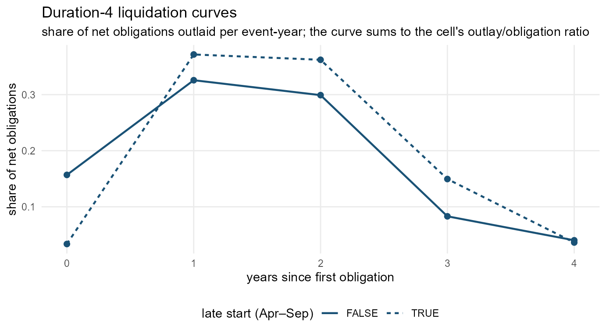

The bundled outlay_model was fitted on 1,184 ground-truth awards from 51 nonprofits. If your portfolio looks different — other agencies, other award durations, another era — refit on your own ground truth. The whole pipeline is three calls: retrieve (us_outlay_training()), inspect/extend features (us_outlay_features()), fit and evaluate (us_impute_fit(), us_impute_eval()).
1. Retrieve: build a training set
us_outlay_training() does the whole ground-truth screen: award features from your transaction ledger, annual File C outlays per award (fetched via us_fetch_outlays(), one paged request per candidate — sustained pulls beyond ~1,000 requests can trip a temporary host block, so large pulls are worth caching), linkage, and the two truth tiers.
tx <- us_normalize_transactions(my_extract$transactions)
tr <- us_outlay_training(tx) # fetches File C for every candidate
# or, with a cached pull:
tr <- us_outlay_training(tx, funding = my_cached_funding)This vignette works offline with the bundled set:
tr <- outlay_training
tr
#>
#> ── outlay-imputation training set ────────────────────────────────────────────────────────
#> • 7853 candidate awards, 1184 ground truth
#> • 905 reconciled, 279 shape-complete
#> • 4020 award-year rows, as of FY2026
tr$awards[!is.na(tier), .N, by = .(tier, mod_class)][order(tier, -N)]
#> tier mod_class N
#> <char> <char> <int>
#> 1: reconciled single_year 386
#> 2: reconciled multi_year_incremental 217
#> 3: reconciled extension_timeline 166
#> 4: reconciled reduced 115
#> 5: reconciled extension_funded 21
#> 6: shape_complete multi_year_incremental 115
#> 7: shape_complete reduced 65
#> 8: shape_complete extension_timeline 42
#> 9: shape_complete single_year 32
#> 10: shape_complete extension_funded 25The screens are deliberate, not incidental — an award whose File C records don’t reconcile with its own ledger, or whose cash story is censored, teaches the model the reporting system instead of the spending. Tiers, thresholds and rationale are specified in IMPUTATION.md §1.
2. Features
us_outlay_features() is the shared feature layer — the training builder calls it, and us_impute_outlays() calls it again at prediction time, so anything you compute here is available on both sides.
f <- us_outlay_features(us_normalize_transactions(vumc_transactions))
f[, .N, by = .(dur_bin, late_start)][order(dur_bin, late_start)][1:8]
#> dur_bin late_start N
#> <int> <lgcl> <int>
#> 1: 1 FALSE 64
#> 2: 1 TRUE 42
#> 3: 2 FALSE 63
#> 4: 2 TRUE 158
#> 5: 3 FALSE 53
#> 6: 3 TRUE 241
#> 7: 4 FALSE 68
#> 8: 4 TRUE 212The default model cells are dur_bin (award duration in fiscal years, capped at 6) × late_start (first obligated April–September). The experiment tested award type as a third dimension and found it added nearly nothing beyond duration in a grant-dominated sample — but the cells argument takes any feature columns present in the grid, so a portfolio where type matters can use them.
3. Fit
m <- us_impute_fit(tr, cells = c("dur_bin", "late_start"), min_cell = 8)
m
#>
#> ── liquidation-curve outlay model ────────────────────────────────────────────────────────
#> • fitted on 1184 ground-truth awards (as of FY2026)
#> • cells: dur_bin x late_start, min cell 8
#> • global outlay/obligation ratio 0.94
#> • durations supported: 1 (n=27), 2 (n=273), 3 (n=416), 4 (n=454), 5 (n=13), 6 (n=1)The fitted object is transparent — plain curve tables you can inspect and plot. The duration-4 curves show both regularities the model banks on: the lag (mass at years 1–2) and the late-start shift (the TRUE curve barely spends in year 0):
library(ggplot2)
#> Warning: package 'ggplot2' was built under R version 4.5.3
cc <- m$curves_cell[dur_bin == 4 & n >= m$min_cell]
ggplot(cc, aes(t, share, linetype = late_start)) +
geom_line(colour = "#1a5276", linewidth = 0.8) +
geom_point(colour = "#1a5276", size = 2) +
labs(title = "Duration-4 liquidation curves",
subtitle = "share of net obligations outlaid per event-year; the curve sums to the cell's outlay/obligation ratio",
x = "years since first obligation", y = "share of net obligations",
linetype = "late start (Apr–Sep)") +
theme_minimal(base_size = 11) +
theme(legend.position = "bottom", panel.grid.minor = element_blank())
4. Evaluate
us_impute_eval() refits out-of-fold and scores against the two reference rules on both metrics — timing (misallocation share, level normalized away) and level_timing (the method is charged for missing the cash level too).
ev <- us_impute_eval(tr, folds = 5)
ev$summary
#> metric method mean median dollar_weighted
#> <char> <char> <num> <num> <num>
#> 1: level model 0.354 0.303 0.338
#> 2: level even_spread 0.428 0.423 0.410
#> 3: level as_obligated 0.847 0.968 0.815
#> 4: timing model 0.329 0.295 0.313
#> 5: timing even_spread 0.405 0.410 0.395
#> 6: timing as_obligated 0.746 0.898 0.752
ev$by_class
#> mod_class n model as_obligated even_spread
#> <char> <int> <num> <num> <num>
#> 1: extension_funded 46 0.282 0.550 0.341
#> 2: extension_timeline 208 0.308 0.819 0.405
#> 3: multi_year_incremental 332 0.333 0.688 0.422
#> 4: reduced 180 0.360 0.625 0.446
#> 5: single_year 418 0.327 0.831 0.380Read ev$by_class before trusting the model on a skewed portfolio: reduced awards are the hardest class for every method, and a portfolio dominated by them deserves wider error bars, not a better point estimate.
5. Use it
A fitted model drops into the imputation functions anywhere the bundled one would be used:
tx <- us_normalize_transactions(us_sample_extract()$transactions)
imp <- us_impute_outlays(tx, model = m)
imp[, .(dollars = round(sum(outlay_imputed))), by = imputation_method]
#> imputation_method dollars
#> <char> <num>
#> 1: none 0
#> 2: liquidation_curve 9712944
#> 3: even_spread 14874129
saveRDS(m, "outlay-model-2026.rds") # reuse across sessions
p <- us_panel(my_extract, period = "fiscal")
p <- us_add_imputed_outlays(p, model = m)Refit when your ground truth grows — every fiscal year that closes moves more awards through the truth screens, and the support envelope (the durations the model will speak for) widens with it.